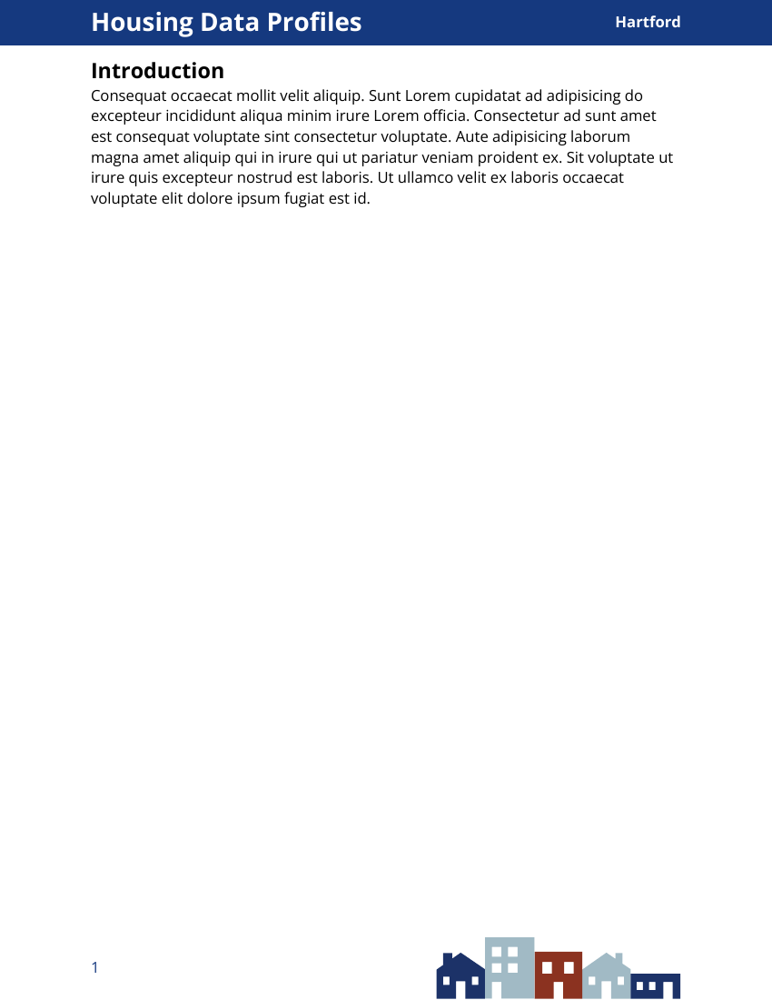
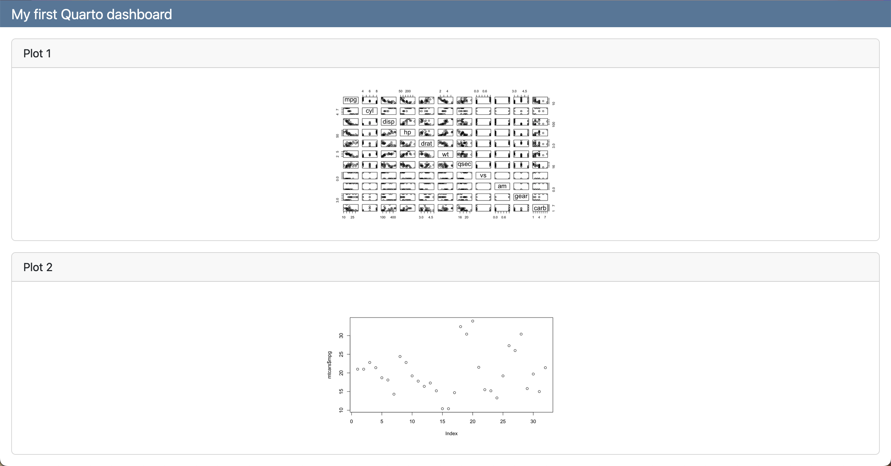
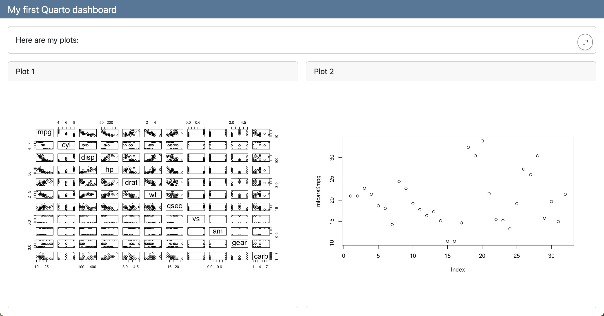
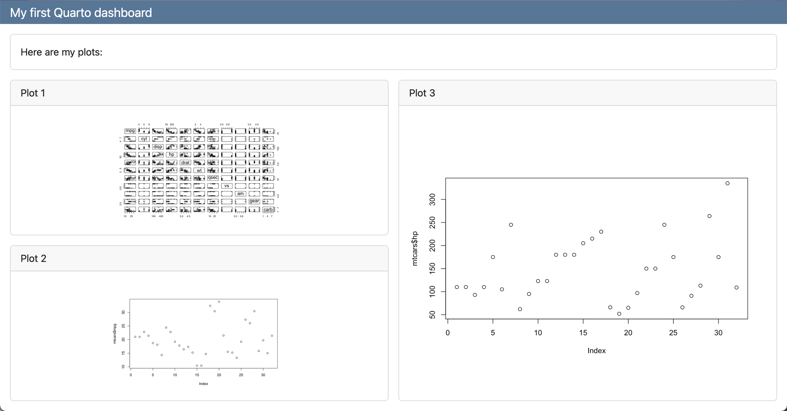
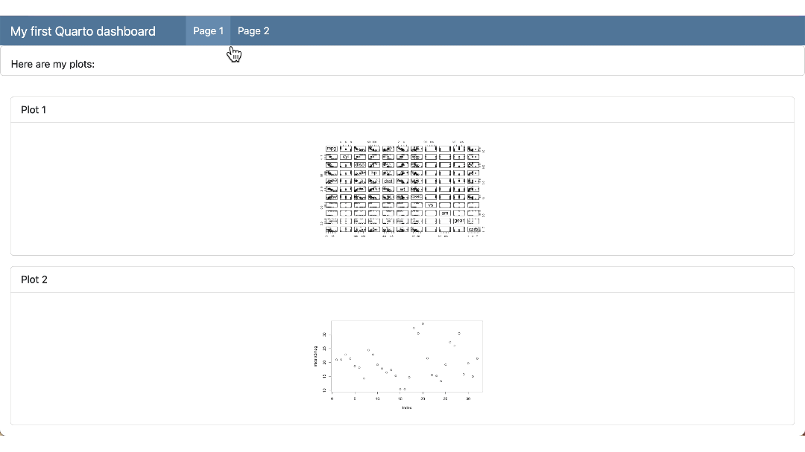
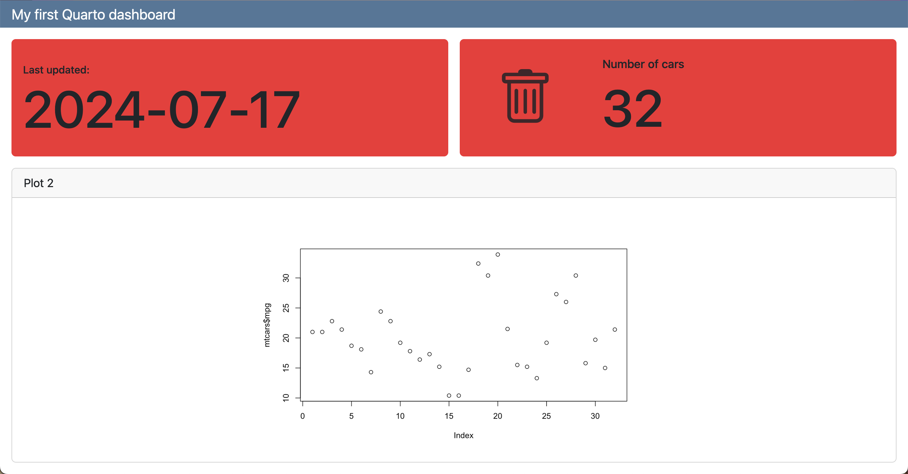
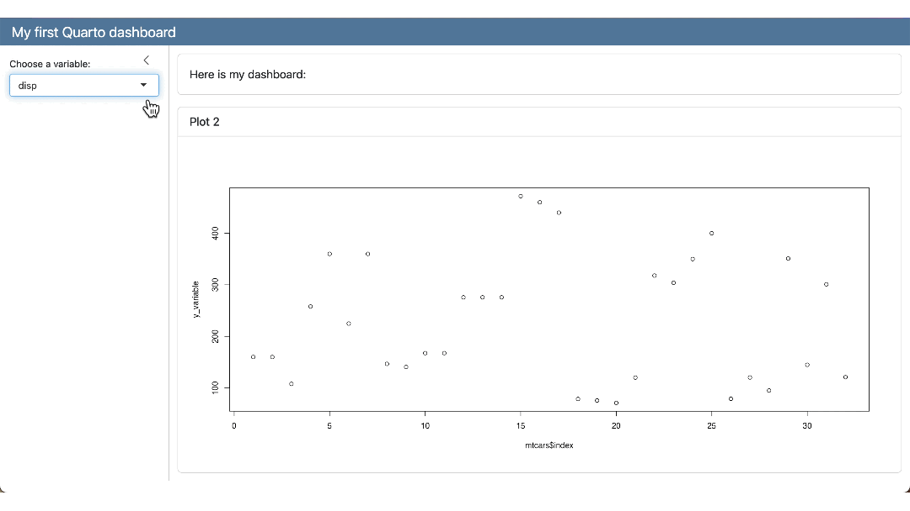

Quarto
Misc
Packages
- {quarto}
- {{brand_yml}} - Create reports, apps, dashboards, plots and more that match your company’s brand guidelines with a single
_brand.ymlfile- For Quarto dashboards, websites, reports, etc.
- For Python shiny, seaborn, matplotlib, etc.
- For R shiny, ggplot2, plot, RMarkdown
- {froggeR} - Reusable templates and project structures
- Enhanced Quarto Project Creation
- Creates skeleton of project files. These files can also be created with individual functions (See below)
- Reusable YAML Headers
- Templated Documents
- .gitignore, SCSS, RProj, README templates
- Enhanced Quarto Project Creation
- {litedown} - A lightweight version of R Markdown
- Control number of rows printed (source)
Global
options(xfun.md_table.limit = N)- Where N is the number of the maximum number of rows you want printed.
Chunk
```{r print.args = list(data.frame = list(limit = N)} # stuff ```- You can substitute ‘data.frame’ with the class of your data object to be printed
- Control number of rows printed (source)
- {cocoon} - Extract, Format, and Print Statistical Output into inline Rmd/qmd documents
Resources
- Docs
- Quarto: The Definitive Guide
- Reference
- yaml and chunk options for file and project types
- Troubleshooting
- Sass Variables
- HTML
- RevealJS
- Dashboard
- Default values for all Bootstrap Sass variables
- Knitr Chunk Options
Tools
- qvm - Quarto Version Manager
quarto --version- Must be in RStudio Terminalquarto check- Must be in RStudio Terminal - versions and engine checks$ quarto check [>] Checking versions of quarto binary dependencies... Pandoc version 3.1.1: OK Dart Sass version 1.55.0: OK [>] Checking versions of quarto dependencies......OK [>] Checking Quarto installation......OK Version: 1.3.340 Path: C:\Users\tbats\AppData\Local\Programs\Quarto\bin CodePage: 1252 [>] Checking basic markdown render....OK [>] Checking Python 3 installation....OK Version: 3.8.1 (Conda) Path: C:/Users/tbats/Miniconda3/python.exe Jupyter: 4.9.1 Kernels: python3 (\) Checking Jupyter engine render....2023-04-28 10:18:15,018 - traitlets - WARNING - Kernel Provisioning: The 'local-provisioner' is not found. This is likely due to the presence of multiple jupyter_client distributions and a previous distribution is being used as the source for entrypoints - which does not include 'local-provisioner'. That distribution should be removed such that only the version-appropriate distribution remains (version >= 7). Until then, a 'local-provisioner' entrypoint will be automatically constructed and used. The candidate distribution locations are: ['C:\\Users\\tbats\\Miniconda3\\lib\\site-packages\\jupyter_client-5.3.4.dist-info', 'C:\\Users\\tbats\\Miniconda3\\lib\\site-packages\\jupyter_client-7.0.6.dist-info'] [>] Checking Jupyter engine render....OK [>] Checking R installation...........OK Version: 4.2.3 Path: C:/PROGRA~1/R/R-42~1.3 LibPaths: - C:/Users/tbats/AppData/Local/R/win-library/4.2 - C:/Program Files/R/R-4.2.3/library knitr: 1.42 rmarkdown: 2.20 [>] Checking Knitr engine render......OKCLI
quarto renderto compile a documentquarto previewto render a live preview that automatically updates when the source files are saved
Using a development verison of Quarto
- First Usage
Change directories to where you want to store the dev version
Clone repo and change to the cloned directory
git clone https://github.com/quarto-dev/quarto-cli cd quarto-cliDisable Anti-Virus
Run Configuration Script
Windows Command Prompt
cmd /k configure.cmd\kkeeps the window open in case it errors
Powershell
Invoke-Item configure.cmdLinux/MacOS
./configure.shThis will take a minute or two as it checks versions, installs dependencies like pandoc, etc.
Add path to quarto.cmd to PATH
- After the configuration file runs, it will output the path you need to put on PATH, e.g.
"C:\Users\erc\Documents\Quarto\quarto-cli\package\dist\bin"
- After the configuration file runs, it will output the path you need to put on PATH, e.g.
Enable Anti-Virus
Should be able to use in RStudio
- I was not able to use the RStudio terminal for quarto commands (e.g.
quarto check) though. - To find the version, I just opened powershell and ran
quarto –versionjust to make sure it was running and on PATH.- Not sure if they use this every time but it was 99.9.9 instead of the verion in the changelog.
- I also rendered a qmd file using
quarto-cmdfrom the root directory of quarto-cli to see if it matched the output from RStudio. (cd qmdthenquarto preview forecasting-statistical.qmd --to html --no-watch-inputs --no-browse)
- I was not able to use the RStudio terminal for quarto commands (e.g.
- Subsequent Development Versions
- Change directory to quarto-cli and
git pull
- Change directory to quarto-cli and
- First Usage
Shortcuts
- New R chunk: ctrl + alt + i
- Build whole book: ctrl+shift b
- Render page and preview book: ctrl+shift k
Using yaml style for chunk options
.jpg)
Convert Rmd chunk options to Quarto:
knitr::convert_chunk_header("doc.rmd", "doc.qmd")Anchor Link - A link, which allows the users to flow through a website page. It helps to scroll and skim-read easily. A named anchor can be used to link to a different part of the same page (like quickly navigating) or to a specific section of another page.
- This is the “#sec-moose” id that can be added to headers which it allows to be referenced within the document or in other documents.
MathJax commands
- Font Size:
\tiny{ }, \scriptsize{ }, \small{ }, \normal{ }, \large{ }, \Large{ }, \LARGE{ }, \huge{ }, \Huge{ }
- Font Size:
Lightbox
- Docs
- Grouping images for lightbox carousel:
{group="my-gallery"} - For a book project, you should set quarto options at the outer most level in _quarto.yml (e.g. not under format >> html)
Foldable (non-executable) Code Blocks
HTML Tags
 <details> <summary>Code: My non-executable code</summary> ``` r # code ``` </details>
Add an animated gif
```{r, echo = FALSE} knitr::include_graphics("man/figures/clusterpermute_animation.gif", error = FALSE) ```Using variables and highlighting text
```{epoxy, .data=text_data_chunk_1_3} In {year}, measles elimination was <span class = "txt-navy">achieved</span> in {nb_achieved} countries in the WHO region, while it was <span class = "txt-yellow">re-established</span> in ... ```Slides
- If you want to use inline code in a reveal-js without any other R code chunks, make sure to specify engine: knitr in your YAML (source)
- Issue can come up when working on a title slide, and not having any code chunks yet.
- If you want to use inline code in a reveal-js without any other R code chunks, make sure to specify engine: knitr in your YAML (source)
Syntax
Inline code
- Total number of counties: **`{r} polling_places |> filter(state == "Alabama") |> distinct(county_name) |> count()`** - Total number of polling places: **`{r} polling_places |> filter(state == "Alabama") |> count()`** - Election Day: **`{r} polling_places |> filter(state == "Alabama") |> pull(election_date) |> unique()`**To escape backticks in inline code, you have to use double-backticks instead of single backticks
Example: To get
"`"\$(\$file.FullName)`""`` "`"\$(\$file.FullName)`"" ``
Align code chunk under bullet and add indented comment below chunk
- [Example]{.ribbon-highlight} (using a SQL Query; method 1) ``` r # open dataset ds <- arrow::open_dataset(dir_out, partitioning = "species") # open connection to DuckDB con <- dbConnect(duckdb::duckdb()) # register the dataset as a DuckDB table, and give it a name duckdb::duckdb_register_arrow(con, "my_table", ds) # query dbGetQuery(con, " SELECT sepal_length, COUNT(*) AS n FROM my_table WHERE species = 'species=setosa' GROUP BY sepal_length ") # clean up duckdb_unregister(con, "my_table") dbDisconnect(con) ``` - filtering using a partition, the WHERE format is '\<partition_variable\>=\<partition_value\>'- Space between bullet and top ticks
- Space between bottom ticks and bullet
- Note alignment of text
Add Code Annotations
- [Partition a large file and write to arrow format]{.underline} ``` r lrg_file <- open_dataset(<file_path>, format = "csv") # <1> lrg_file %>% group_by(var) %>% # <2> write_dataset(<output_dir>, format = "feather") # <3> ``` 1. Pass the file path to `open_dataset()` 2. Use `group_by()` to partition the Dataset into manageable chunks 3. Use `write_dataset()` to write each chunk to a separate Parquet file---all without needing to read the full CSV file into R - `open_dataset` is fast because it only reads the metadata of the file system to determine how it can construct queriesFootnote
words [^1] [^1]: Data from https://github.com/rfordatascience/tidytuesdayFor PDF output, you need pagebreaks:
{{< pagebreak >}}Reference Figure
1 See polling place locations in @fig-statemap.
YAML
Set global chunk options in yaml

For code cells
execute: echo: false message: false warning: false
Enable Margin Notes
--- # YAML front matter reference-location: margin ---!exprto render code within chunk options- e.g. figure caption:
#| fig-cap: !expr glue::glue("The mean temperature was {mean(airquality$Temp) |> round()}")
- e.g. figure caption:
column: screen-insetyaml markup is used to show a very wide tableIf you haven’t set your Quarto document to be
self-contained, then the images have also already been saved for you - probably in a folder calleddocumentname_files/figure-html/format: html: embed-resources: trueDate first published and date modified using the current date:
--- date: 2024-01-01 date-modified: today ---YAML Examples
- Example

- Example
For Standalone HTML Documents with htmlwidgets, make sure to set embed-resources: true
--- format: html: embed-resources: true ---
Chunk Options
Graphics
Code Chunk
#| label: "fig-statemap" #| dpi: 300 #| fig.height: 7.2 #| fig.width: 3.6 #| dev: "png" #| echo: false #| warning: false #| message: false- Example shows settings for a graph for mobile
fig.heightandfig.widthare always given in inches
Set Figure Height and Width Dynamically
```{r} if(params$country == "Somalia") { map_width <- 5 map_height <- 4 } else { ... } ``` stuff and more stuff ```{r} |# fig-width: !expr map_width + .5 |# fig-height: !expr map_height ```
Dynamic Fig Captioning (via rmflight)
```{r} #| label: fig-each #| fig-cap: !expr glue::glue('Number of things in {multi}.') #| fig-keep: all purrr::walk(multi, \(in_item){ tmp = big_df |> dplyr::filter(value %in% in_item) print(ggplot(tmp, aes()) + geom_point()) }) ```Conditional Code Chunk Evaluation
Example: document output type
Set value in a code chunk
```{r setup} # Include in first chunk of .qmd # Get output file type out_type <- knitr::opts_knit$get("rmarkdown.pandoc.to") ```Use
!exprsytax to determine evaluation statusExample: eval chunk based on output type
```{r} #| eval: !expr out_type == "html" # code to create interactive {plotly} ``` ```{r} #| eval: !expr out_type == "docx" # code to create static {ggplot2} ```
Example: Use parameterization to set value
--- title: "test" format: html params: my_value: false ---- my_value can then be used throughout the document to determine chunk evaluation status
Knitr Hooks
- Notes from Writing knitr hooks
- Also has a knitr hook example that alters cell output (e.g. only prints 4 lines of a vector)
- Chunk Hooks
Chunk hooks get called twice: once before knitr executes the code in the chunk, and once again afterwards
The function can take up to four arguments, all of which are optional:
- before: A logical value indicating whether the function is being called before or after the code chunk is executed
- options: The list of chunk options
- envir: The environment in which the code chunk is executed
- name: The name of the code chunk option that triggered the hook function
The chunk hook is called for its side effects not the return value. However, if it returns a character output, knitr will add that output to the document output as-is.
Example: Chunk Timer
Code
create_timer_hook <- function() { start_time <- NULL function(before, options) { if (before) { start_time <<- Sys.time() } else { stop_time <- Sys.time() elapsed <- difftime(stop_time, start_time, units = "secs") paste( "<div style='font-size: 70%; text-align: right'>", "Elapsed time:", round(elapsed, 2), "secs", "</div>" ) } } } knitr::knit_hooks$set(timer = create_timer_hook())- The hook is triggered the first time (with
before = TRUE) to record the system time somewhere (e.g., in a variable called start_time). Then, when the hook is triggered the second time (withbefore = FALSE), it records the system time again (e.g., as stop_time), and computes the difference in time.
- The hook is triggered the first time (with
Use in a cell
```{r} #| timer: true runif(10000) ```Output

- Notes from Writing knitr hooks
Multiple Programming Languages
If only R or R and Python, the notebook is rendered by {knitr}
If only Python, the notebook is rendered by jupyter
Set-up
- {reticulate} automatically comes loaded in Quarto and it knows to use it when it sees a python block, so you don’t need to load the package
- Quarto will select a version of Python using the Python Launcher on Windows or system
PATHon MacOS and Linux. You can override the version of Python used by Quarto by setting theQUARTO_PYTHONenvironment variable.- In CLI on Windows, type
pyis see which version the Python Launcher , and therefore Quarto, is using andpy –listto see which versions are installed.
- In CLI on Windows, type
R
```{r} #| label: read-data #| echo: true #| message: false #| cache: true lemurs <- readr::read_csv('https://raw.githubusercontent.com/rfordatascience/tidytuesday/master/data/2021/2021-08-24/lemur_data.csv') ```Python
```{python} #| label: modelling #| echo: true #| message: false lemur_data_py = r.lemur_data import statsmodels.api as sm y = lemur_data_py[["Weight"]] x = lemur_data_py[["Age"]] x = sm.add_constant(x) mod = sm.OLS(y, x).fit() lemur_data_py["Predicted"] = mod.predict(x) lemur_data_py["Residuals"] = mod.resid` ```- Use
r.to access the data in the R chunk - The first execution of a python cell starts
reticulate::repl_python()in the terminal
- Use
(back to) R
```{r} #| label: plotting #| echo: true #| output-location: slide #| message: false #| fig-align: center #| fig-alt: "Scatter plot of predicted and residual values for the fitted linear model." library(reticulate) library(ggplot2) lemur_residuals <- py$lemur_data_py ggplot(data = lemur_residuals, aes(x = Predicted, y = Residuals)) + geom_point(colour = "#2F4F4F") + geom_hline(yintercept = 0, colour = "red") + theme(panel.background = element_rect(fill = "#eaf2f2", colour = "#eaf2f2"), plot.background = element_rect(fill = "#eaf2f2", colour = "#eaf2f2")) ```- Use
py$to access the data in the Python chunk * - Must call
library(reticulate)in order for Quarto to recognizepy$
- Use
Use embed shortcode to add more than one programming language engine to a document (source)
--- format: html: embed-resources: true engine: knitr --- ::: {.panel-tabset .nav-pills} ## R ```{r} print("Hello World, from R") ``` ```{r} #| fig-align: "center" x <- seq(-10,10, by = 0.1) y <- x ^ 3 plot(x, y, type = "l") ``` ## Python {{< embed python-code-using-jupyter-python3-engine.qmd echo=true >}} ## Stata {{< embed stata-code-using-jupyter-nbstata-engine.qmd echo=true >}} ## Julia {{< embed julia-code-using-julia-engine.qmd echo=true >}} :::
Layouts
2 cols (1 col: text, 1 col: image)

::: {layout="[50,50]"} ::: column Every Quarto project starts with a Quarto file that has the extension `.qmd`. This particular one analyzes children's early words, but every `.qmd` includes the same three basic elements inside: - A block of metadata at the top, between two fences of `---`s. This is written in [YAML](https://learnxinyminutes.com/docs/yaml/). - Narrative text, written in [Markdown](https://commonmark.org/help/tutorial/). - Code chunks in gray between two fences of ```` ``` ````, written with R or another programming language. You can use all three elements to develop your code and ideas in one reproducible document. :::  :::2 figures, 2 columns (i.e. side-by-side) with captions at the top
--- fig-cap-location: top --- - Words - Predictions of Standard RF vs Oblique RF ::: {layout-ncol="2"} {fig-align="left" width="432"} {fig-align="left" width="432"} ::: - Words- fig-cap-location: bottom is default;
- fig-cap-location: margin is buggy, at least in for project type book. Captions are added to the margins but bullet points mysteriously disappear during rendering to html
2 charts side-by-side extending past body margins
```{r} #| label: my-figure #| layout-ncol: 2 #| column: page ggplot() + ... ggplot() + ... ```- “layout-ncol” says 2 side-by-side columns
- “column: page” says extend column width to the width of the page
Tabs
- Stuff - More Stuff ::: panel-tabset ## tab title 1 ``` r # code ``` ## tab title 2 words ``` r # other code ``` - Thoughts ::: - StuffNested Tabs


Callout Blocks
Resources
Example: Todo
::: {.callout-note collapse="true"} ## todo 1. Finish video - Currently working on: multinomial 2. Figure out exactly what $e$ is in the weight formula 3. Organize note 4. Transfer PS Matching section from econometrics-general :::Example: Caution
::: callout-caution This note is unfinished. I still have more to add, and the concepts need to be organized. :::
Landscape Mode
In docx, pdf, and typst formats, you can set portions of the document to landscape mode by wrapping the content around a fenced div
Syntax
This will appear in portrait mode. ::: {.landscape} This will appear in landscape. ::: This will appear in portrait mode again.
Automation
Misc
- Using External R FIles (source)
Use
source```{r} source("../code/functions.R") ```Chunk Option
```{r} #| file: R/functions.R ```- Also see Include shortcode below
- The file path should be relative to where your Quarto document is, and you need to make sure you set eval: true either in the code block, or document-wide.
- Use dataframes as parameter inputs
Not recommended. Should used files (e.g. csvs) instead.
Using serialization
- Explanation,
toJSONworkaround
- Explanation,
Using
get--- title: "Data as a parameter" params: dataset: "mtcars" --- ```{r} head(get(params$dataset)) ```
- Using External R FIles (source)
Include shortcode to copy/paste the content of another quarto document (Docs, Article)
Relative references (links, images, etc.) inside the included file resolve based on the directory of the main file not the included file
Need to appear by themselves in a line, and they need to be surrounded by empty lines. This means that you cannot use an include shortcode inside markdown syntax (such as an item in a bulleted list).
Use cases: block of text, code cells
Example: Text
Source Document (
_snippets/state-intro.qmd)In this document, we cover facts that are unique to the state, like the state's population, its flower, and animal.- So text that we want to appear at the top of multiple documents
Main Document
--- title: New York --- {{< include _snippets/state-intro.qmd >}} New York has a geographical size of 54,555, making it the 27th largest state with an estimated population size of 19.8 million. The state's flower is the Rose, as shown below: 
Example: Text with parameters
Source Document (
_snippets/facts.qmd){{< meta state >}} covers approximately {{< meta square-miles >}} making it the {{< meta size-rank >}} largest state in the United States. As of 2023, {{< meta state >}} has an approximate population of about {{< meta population >}}.- state, square-miles, size-rank, and population are parameters whose values will be set in the the main document.
Main Document
--- title: New York state-abbr: ny state: New York size-rank: 27th square-miles: 54,555 population: 19.8 million flower: Rose --- {{< include _snippets/facts.qmd >}} {{< meta state >}}'s official flower is the {{< meta flower >}}, pictured below: The text from the source document is transferred to the main document and the parameter values set in the yaml will be inserted into appropriate shortcode locations.
Meta variables are also used in image captions and file paths
Using External Quarto Files (Docs):
{{< include file.qmd >}}
Iteration and Parameterization
Misc
Notes from
- Velásquez R-Ladies Nairobi: Code, Slides, Video
- Jadey Ryan SLC RUG talk: source
- Rennie FAQ
Might need to use
fs::file_moveto move processed reports to another folder.You can also use Quarto Project and its
_quarto.ymlfile to specify a directoryproject: output-dir: "Outputs"- If you’re publishing your document on GitHub Pages (but not using GitHub Actions to render the documents), then setting
output-dir: "docs"will make for easier set up.
- If you’re publishing your document on GitHub Pages (but not using GitHub Actions to render the documents), then setting
Helper function that moves rendered files with base R file maintenance functions
Check the number of pages generated is correct (source)
purrr::walk(list.files("generated_reports/", full.names = TRUE), function (x) { pdf_length <- pdftools::pdf_length(x) if (pdf_length != 6) { print(paste0(x, " reports ERROR")) } else { print("All reports have correct number of pages") } })Plot Bug During Iteration (source, github issue)
When using
walk, plots get overwritten in the loop and either none show up or only the last one shows up in the document.Solution: Set Embed Resources in YAML
--- format: html: embed-resources: true ---
It involves having a “child” document as a template and running it repeatedly with different parameters
The “main” document includes the output from the child document
Rendering Options
CLI: e.g.
quarto render polling-places-report.qmd -P state:'California'{quarto}:
quarto::quarto_render( input = here::here("polling-places-report.qmd"), execute_params = list(state = "California") # execute_params = yaml::yaml.load_file("params.yml") )- YAML files can be used to deliver parameter values
Example: Create a report for each parameter value. In each report, use the parameter value (e.g. state) to iterate through a template file that makes a tables (1 for each county) based on that value.
Main Report Document
--- title: "Polling Places Report - `r params$state`" params: state: "California" --- ```{r} #| results: hide library(dplyr) counties <- polling_places |> filter(state == params$state) |> distinct(county_name) |> pull() expanded_child <- counties |> purrr::map(\(county) { knitr::knit_expand("../_template.qmd", current_county = county)) }|> purrr::flatten() parsed_child <- knitr::knit_child(text = unlist(expanded_child)) ``` `{{r}} parsed_child`- The document that gets published, emailed, etc.
- params specified in YAML
- Value can also be used in the title of the document via inline R code
- Each county is iterated through the child document (_template.qmd) via current_county variable and
knit_expand - parsed_child is a list of the template file outputs.
- Then, parsed_child is converted to a character vector by
unlistand all the results are printed in the document by the inline R code
Child Document (i.e. Template)
### {{current_county}} COUNTY - Total Polling Places: `{r} polling_places |> filter(state == params$state, county_name == "{{current_county}}") |> count()` - Example Locations: ```{r} polling_places |> filter(state == params$state, county_name == "{{current_county}}") |> head(6) |> select(name, address.x) |> kbl(format = "markdown") ```- Parameter value is used to get county data and create tables for each.
- No YAML is necessary in child document
- params values are automatically available through
knitr::knit_expandthat’s executed in the Main document
- params values are automatically available through
- The county variable is utilized by the template file using the double curly braces,
{{current_county}} kbloutputs in markdown format so the table is correctly rendered in the Main document.
Rendering Script
Example
polling_places <- readr::read_csv(here::here("data", "geocoded_polling_places.csv")) # create quarto::render arguments df polling_places_reports <- polling_places |> dplyr::distinct(state) |> dplyr::slice_head(n = 5) |> dplyr::mutate( output_format = "html", output_file = paste0(tolower(state), "-polling-places"), execute_params = purrr::map(state, \(state) list(state = state)) ) |> # default output is html, so that variable not selected dplyr::select(output_file, execute_params) # iterate through args and create reports purrr::pwalk( .l = polling_places_reports, .f = quarto::quarto_render, input = here::here("main_report_document.qmd"), .progress = TRUE )- Creates a report for each params value (e.g. state)
- Generates a dataframe for each set of arguments to be fed to
quarto::quarto_render.
Example
gapminder_params <- expand.grid( years = unique(gapminder$year), continents = unique(gapminder$continent) ) walk2( .x = gapminder_params$years, .y = gapminder_params$continents, .f = ~quarto_render( input = "example.qmd", output_file = glue("report_{.x}_{.y}_{Sys.Date()}.html"), execute_params = list( choose_year = .x, choose_continent = .y ) ) )
Typst
Alternative to LaTeX for formatting pdfs
Resources
Notes from
Comparison with LaTeX
LaTeX
\usepackage{geometry} \usepackage{eso-pic} \usepackage{xcolor} \geometry{a4paper, total={170mm,257mm}, left=20mm, top=20mm, bottom=20mm, right=50mm} \definecolor{light}{HTML}{E6E6FA} \AddToShipoutPicture{% \AtPageLowerLeft{% \put(\LenToUnit{\dimexpr\paperwidth-3cm},0){% \color{light}\rule{3cm}{\LenToUnit\paperheight}}% }% }%- Advantages
- You want to include equations (currently easier in LaTeX)
- (Currently) more flexibility with images and tables
- Advantages
Typst
set page( margin: (left: 2cm, right: 1.5cm, top: 2cm, bottom: 2cm), background: place(right + top, rect( fill: rgb("#E6E6FA"), height: 100%, width: 3cm, )) )Advantages
- Easier to learn
- More informative error messages
- No extra installations
- Speed
Font
--- title: "My document" format: typst: mainfont: "Cascadia Code" ---Template
- Example 1
YAML
--- title: "My document" format: typst: template-partials: - typst-template.typ - typst-show.typ ---typst-show.typtakes the variables from the quarto document and passes them to typsttypst-template.typ- Once typst has the quarto variables, it creates this template which is used to create the pdf
Show
#show: article.with( $if(title)$ title: "$title$", $endif$ ) # another example with a param town in quarto yaml #show: psc-report.with( $if(title)$ title: "$title$", $endif$ $if(params.town)$ town: "$params.town$", $endif$ )- Says if there’s a title in the qmd, then create a variable, title, with its value
Template
#let article( // The document title. title: "Some title", // The document content. body ) = { // Set document metadata. set document(title: title) // Links should be purple. show link: set text(rgb("#800080")) // Title. text(weight: 800, upper(title))
- Example 2 (source)
Show
#show: psc-report.with( $if(title)$ title: "$title$", $endif$ $if(params.town)$ town: "$params.town$", $endif$ )- Sets variables for title metadata and town param from quarto YAML
Template
Code
#let psc-report( title: "title", town: "town", body, ) = { // text style for whole report set text( font: "Open Sans", size: 12pt, ) set page( // dimensions of document "us-letter", // or "a4" margin: (left: 1in, right: 1in, top: 0.7in, bottom: 1in), // places blue rectangle in header background: place(top, rect(fill: rgb("15397F"), // hex-code for color width: 100%, height: 0.5in ) ), // creates layout for text in header rectangle header: align( horizon, grid( columns: (80%, 20%), // div sizes for title, town text // title text properties align(left, text(size: 20pt, fill: white, weight: "bold", title)), // town text properties align(right, text(size: 12pt, fill: white, weight: "bold", town) ) ) ), // page number, image footer: align( grid( columns: (40%, 60%), // page number, graphic align(horizon, text(fill: rgb("15397F"), size: 12pt, counter(page).display("1"))), // sets page number align(right, image("assets/psclogo.svg", height: 300%) ) ) ) body }
- Example 1
Extensions
- Installing the extension downloads a .typ file with some styling
- Usage
Example: dept-news extension
--- title: "Chemistry Department" format: dept-news-typst: default ---
{kind=link}
WebR
Set-Up
- Install the extension alongside your blog post by running
quarto add coatless/quarto-webr - Add the extension to your blog by adding
filters: ["webr"]to your post’s frontmatter - Instead of
{r}code chunks, use{webr-r}ones
- Install the extension alongside your blog post by running
Install CRAN packages on page load
filters: - "webr" webr: packages: - "dplyr" - "tidyr" - "purrr" - "tibble" - "crayon"- Add to frontmatter
Install R-Universe Package
```{webr-r} #| context: setup webr::install("collateral", repos = c("https://jimjam-slam.r-universe.dev")) ```- R-Universe packages must be installed in code cells
Extensions
- Resources
- Docs
- Icons in Quarto (Tutorial)
- Commands
- Extension Install:
quarto add username/repository - List exensions in a project:
quarto list extensions - Remove:
quarto remove username/repository - Update:
quarto update username/repository
- Extension Install:
- sverto - Lets you seamlessly write and include Svelte components, like charts and other visuals, in your Quarto website and documents.
- It’s like adding shiny inputs and charts with just some js code.
- closeread (video) - Scrollytelling
- Icons
- animate (library) - CSS text animations
- elevator (library)- Adds a back-to-the-top button at the bottom of the page. Can add a .mp3 to play a sound while the page returns to the top
- nutshell - Opens a window that includes only the snippet you need, not the whole page. Plus, instead of being lost in a jungle of new tabs, your reader stays on one page, keeping their flow of reading
- social-share - Add buttons to share articles on various social media platforms
- bluesky-comments - When someone visits your [Quarto] web page, any replies to the linked post are pulled from Bluesky and shown directly in the page
- custom-callout - Allows you to customize callouts through yaml settings instead of inside the callout code or through css/scss.
{kind=link}
{kind=link}
Dashboards
Misc
- Packages
- {summarywidget} - Works with Crosstalk to display a single summary statistic. The statistic updates when the Crosstalk selection changes.
- A SummaryWidget can display the count, sum or mean of one column of selected data. It can also have a fixed filter that selects a subset of the full dataset.
- {kpiwidget} - Works with crosstalk to display key performance indicators (KPIs) in Quarto dashboards. Extends {summarywidget}
- Offers “count”, “distinctCount”, “duplicates”, “sum”, “mean”, “min”, “max” as well as comparison modes (“ratio” and “share”) that let you compare groups within your data.
- {summarywidget} - Works with Crosstalk to display a single summary statistic. The statistic updates when the Crosstalk selection changes.
- Resources
- Notes from Velasquez talk
- Both interactive JavaScript-based plots and standard raster based plots are supported.
- Deployment Types
- Static: Rendered a single time (e.g.when underlying data won’t ever change)
- Scheduled: Rendered on a schedule (e.g. via cron job) to accommodate changing data.
- Parameterized: Variations of static or scheduled dashboards based on parameters.
- Interactive: Fully interactive dashboard using Shiny (requires a server for deployment).
- See Shiny, Hosting
- Loading Shiny Server Modules
Modules need loaded into a context: setup chunk
Example: (source)
```{r} #| context: setup #| include: false # load all server functions from the R folder for (file in list.files("R", full.names = TRUE)) { source(file) } ``` ```{r} #| context: server gpx <- gpx_upload_server("gpx_upload") # etc ```
- Packages
YAML
Basic
--- title: "My first Quarto dashboard" format: dashboard ---Logo and Nav-Buttons
--- title: "My first Quarto dashboard" format: dashboard: logo: images/car.png nav-buttons: - reddit - icon: gitlab href: https://gitlab.com/ivelasq ---Add Shiny Interactivity
--- title: "My first Quarto dashboard" format: dashboard: orientation: rows server: shiny ---Bootswatch Themes
--- title: "My first Quarto dashboard" format: dashboard: theme: united server: shiny ---CSS and SCSS files
--- title: "My first Quarto dashboard" format: dashboard: theme: style.scss server: shiny ---
Layouts
Using the YAML: Rows or Columns
--- title: "My first Quarto dashboard" format: dashboard: orientation: rows --- ```{r} #| title: "Plot 1" plot(mtcars) ``` ```{r} #| title: "Plot 2" plot(mtcars) ```- orientation: columns for columns format
Using Headings: Multiple Rows
--- title: "My first Quarto dashboard" format: dashboard --- ## Row Here is my dashboard: ## Row ```{r} #| title: "Plot 1" plot(mtcars) ``` ```{r} #| title: "Plot 2" plot(mtcars$mpg) ```Using Headings: Rows and Columns
--- title: "My first Quarto dashboard" format: dashboard --- ## Row Here is my dashboard: ## Row ### Column ```{r} #| title: "Plot 1" plot(mtcars) ``` ```{r} #| title: "Plot 2" plot(mtcars) ``` ### Column ```{r} #| title: "Plot 3" plot(mtcars) ```- 2 rows where the second row has 2 columns and the 1st column has 2 plots
- Sub-layouts determined by h2 and h3 headers
Tabsets
### Column {.tabset} ```{r} #| title: "Plot 1" plot(mtcars) ``` ```{r} #| title: "Plot 2" plot(mtcars$mpg) ```Pages
--- title: "My first Quarto dashboard" format: dashboard --- ## Row Here is my dashboard: # Page 1 ```{r} #| title: "Plot 1" plot(mtcars) ``` ```{r} #| title: "Plot 2" plot(mtcars$mpg) ``` # Page 2 ```{r} #| title: "Plot 3" plot(mtcars$hp) ```- Pages syntax uses h1 headers
- h2 row specification at the top means that row is present in both pages
Text
Only-Text
::: {.card} This text will be displayed within a card :::With Cell
::: {.card} ```{r} plot(mtcars) ``` Above is my plot. :::
Value Boxes
## Row ::: {.valuebox color="#F52A32"} Last updated: `{{r}} Sys.Date()` ::: ```{r} #| content: valuebox #| title: "Spam per day" n <- mtcars |> tibble::as_tibble() |> dplyr::count() |> dplyr::pull(n) list( icon = "trash", color = "#F52A32", value = n ) ```Inputs
Sidebar
## {.sidebar} Sidebar text here!Add Shiny interactivity
```{r} #| context: setup library(ggplot2) ``` ## {.sidebar} ```{r} selectInput( "variableChoice", "Choose a variable:", choices = names(mtcars) ) ``` ## Column ### Row Here is my dashboard: ### Row ```{r} #| title: "Plot 2" plotOutput("variablePlot") ``` ```{r} #| context: server output$variablePlot <- renderPlot({ yVar <- mtcars[[input$variableChoice]] plot(mtcars$index, yVar) }) ``` ```- Need server: shiny in the YAML (See YAML section)
{kind=link}
{kind=link}
{kind=link}
{kind=link}
{kind=link}
{kind=link}